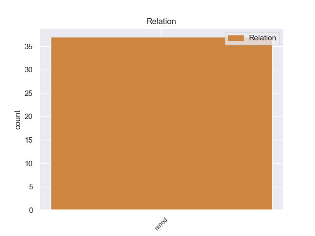
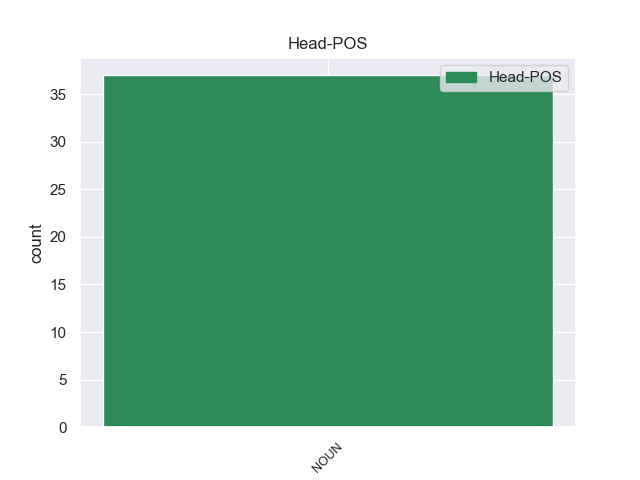
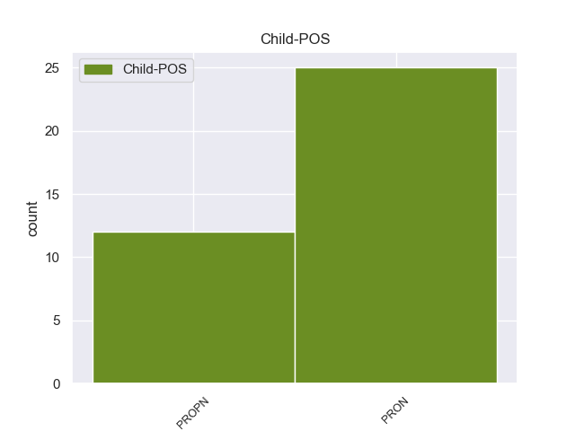

Distribution of features within this leaf



Agreement Rules sorted by frequency.
- When the dependent token is the nominal modifier(nmod) of the head token, and the head token is NOUN and the dependent token is PRON.
1 Όταν _ _ _ _ 0 _ _ _
2 η _ _ _ _ 0 _ _ _
3 Γερμανία _ _ _ _ 0 _ _ _
4 υπέγραψε _ _ _ _ 0 _ _ _
5 ανακωχή _ _ _ _ 0 _ _ _
6 , _ _ _ _ 0 _ _ _
7 συνήλθε _ _ _ _ 0 _ _ _
8 σ _ _ _ _ 0 _ _ _
9 το _ _ _ _ 0 _ _ _
10 Παρίσι _ _ _ _ 0 _ _ _
11 η _ _ _ _ 0 _ _ _
12 συνδιάσκεψη _ _ _ _ 0 _ _ _
13 της _ _ _ _ 0 _ _ _
14 ειρήνης ειρήνη NOUN _ Case=Acc|Gender=Fem|Number=Sing 0 _ _ _
15 , _ _ _ _ 0 _ _ _
16 όπου _ _ _ _ 0 _ _ _
17 ο _ _ _ _ 0 _ _ _
18 Βενιζέλος _ _ _ _ 0 _ _ _
19 παρέστη _ _ _ _ 0 _ _ _
20 ως _ _ _ _ 0 _ _ _
21 αντιπρόσωπος _ _ _ _ 0 _ _ _
22 της _ _ _ _ 0 _ _ _
23 Ελλάδας ελλάδας PRON _ Case=Acc|Gender=Fem|Number=Sing 14 nmod _ _
24 και _ _ _ _ 0 _ _ _
25 πρόβαλε _ _ _ _ 0 _ _ _
26 τις _ _ _ _ 0 _ _ _
27 αξιώσεις _ _ _ _ 0 _ _ _
28 της _ _ _ _ 0 _ _ _
29 χώρας _ _ _ _ 0 _ _ _
30 μας _ _ _ _ 0 _ _ _
31 , _ _ _ _ 0 _ _ _
32 οι _ _ _ _ 0 _ _ _
33 οποίες _ _ _ _ 0 _ _ _
34 έγιναν _ _ _ _ 0 _ _ _
35 σ _ _ _ _ 0 _ _ _
36 το _ _ _ _ 0 _ _ _
37 σύνολό _ _ _ _ 0 _ _ _
38 τους _ _ _ _ 0 _ _ _
39 δεκτές _ _ _ _ 0 _ _ _
40 με _ _ _ _ 0 _ _ _
41 τις _ _ _ _ 0 _ _ _
42 συνθήκες _ _ _ _ 0 _ _ _
43 του _ _ _ _ 0 _ _ _
44 Νεϊγύ _ _ _ _ 0 _ _ _
45 ( _ _ _ _ 0 _ _ _
46 27_Νοεμβρίου_1919 _ _ _ _ 0 _ _ _
47 ) _ _ _ _ 0 _ _ _
48 και _ _ _ _ 0 _ _ _
49 των _ _ _ _ 0 _ _ _
50 Σεβρών _ _ _ _ 0 _ _ _
51 ( _ _ _ _ 0 _ _ _
52 10_Αυγούστου_1920 _ _ _ _ 0 _ _ _
53 ) _ _ _ _ 0 _ _ _
54 . _ _ _ _ 0 _ _ _
1 Το _ _ _ _ 0 _ _ _
2 2001 _ _ _ _ 0 _ _ _
3 , _ _ _ _ 0 _ _ _
4 εκπρόσωποι _ _ _ _ 0 _ _ _
5 ομάδων ομάδα NOUN NOUN Case=Gen|Gender=Fem|Number=Plur 0 _ _ _
6 των _ _ _ _ 0 _ _ _
7 εξόριστων _ _ _ _ 0 _ _ _
8 Θιβετιανών θιβετιανός PROPN PROPN Case=Gen|Gender=Masc|Number=Plur 5 nmod _ _
9 κατάφεραν _ _ _ _ 0 _ _ _
10 να _ _ _ _ 0 _ _ _
11 πάρουν _ _ _ _ 0 _ _ _
12 διαπίστευση _ _ _ _ 0 _ _ _
13 για _ _ _ _ 0 _ _ _
14 συμμετοχή _ _ _ _ 0 _ _ _
15 σε _ _ _ _ 0 _ _ _
16 μία _ _ _ _ 0 _ _ _
17 συνάντηση _ _ _ _ 0 _ _ _
18 μη _ _ _ _ 0 _ _ _
19 κυβερνητικών _ _ _ _ 0 _ _ _
20 οργανώσεων _ _ _ _ 0 _ _ _
21 , _ _ _ _ 0 _ _ _
22 υπό _ _ _ _ 0 _ _ _
23 την _ _ _ _ 0 _ _ _
24 αιγίδα _ _ _ _ 0 _ _ _
25 του _ _ _ _ 0 _ _ _
26 ΟΗΕ _ _ _ _ 0 _ _ _
27 . _ _ _ _ 0 _ _ _
Disagree Examples:
1 Το _ _ _ _ 0 _ _ _
2 γραφικό _ _ _ _ 0 _ _ _
3 κυκλαδίτικο _ _ _ _ 0 _ _ _
4 νησί νησί NOUN NOUN Case=Nom|Gender=Neut|Number=Sing 0 _ _ _
5 της _ _ _ _ 0 _ _ _
6 Σίφνου Σίφνος PROPN PROPN Case=Gen|Gender=Fem|Number=Sing 4 nmod _ _
7 έχει _ _ _ _ 0 _ _ _
8 365 _ _ _ _ 0 _ _ _
9 εκκλησίες _ _ _ _ 0 _ _ _
10 , _ _ _ _ 0 _ _ _
11 μία _ _ _ _ 0 _ _ _
12 για _ _ _ _ 0 _ _ _
13 κάθε _ _ _ _ 0 _ _ _
14 ημέρα _ _ _ _ 0 _ _ _
15 του _ _ _ _ 0 _ _ _
16 χρόνου _ _ _ _ 0 _ _ _
17 . _ _ _ _ 0 _ _ _
1 Θα _ _ _ _ 0 _ _ _
2 εργαστούμε _ _ _ _ 0 _ _ _
3 , _ _ _ _ 0 _ _ _
4 και _ _ _ _ 0 _ _ _
5 δεσμεύομαι _ _ _ _ 0 _ _ _
6 γι' _ _ _ _ 0 _ _ _
7 αυτό _ _ _ _ 0 _ _ _
8 σήμερα _ _ _ _ 0 _ _ _
9 σ _ _ _ _ 0 _ _ _
10 την _ _ _ _ 0 _ _ _
11 Ομάδα ομάδα NOUN NOUN Case=Acc|Gender=Fem|Number=Sing 0 _ _ _
12 μου μου PRON PRON Case=Gen|Gender=Masc|Number=Sing|Person=1|Poss=Yes|PronType=Prs 11 nmod _ SpaceAfter=No
13 , _ _ _ _ 0 _ _ _
14 για _ _ _ _ 0 _ _ _
15 να _ _ _ _ 0 _ _ _
16 εκπληρωθούν _ _ _ _ 0 _ _ _
17 αυτοί _ _ _ _ 0 _ _ _
18 οι _ _ _ _ 0 _ _ _
19 στόχοι _ _ _ _ 0 _ _ _
20 σ _ _ _ _ 0 _ _ _
21 το _ _ _ _ 0 _ _ _
22 μέλλον _ _ _ _ 0 _ _ _
23 και _ _ _ _ 0 _ _ _
24 θα _ _ _ _ 0 _ _ _
25 το _ _ _ _ 0 _ _ _
26 κάνουμε _ _ _ _ 0 _ _ _
27 μαζί _ _ _ _ 0 _ _ _
28 με _ _ _ _ 0 _ _ _
29 την _ _ _ _ 0 _ _ _
30 Επιτροπή _ _ _ _ 0 _ _ _
31 και _ _ _ _ 0 _ _ _
32 το _ _ _ _ 0 _ _ _
33 Συμβούλιο _ _ _ _ 0 _ _ _
34 . _ _ _ _ 0 _ _ _
1 Η _ _ _ _ 0 _ _ _
2 μεσαιωνική _ _ _ _ 0 _ _ _
3 πόλη πόλη NOUN NOUN Case=Nom|Gender=Fem|Number=Sing 0 _ _ _
4 του _ _ _ _ 0 _ _ _
5 Κάστρου κάστρο PROPN PROPN Case=Gen|Gender=Neut|Number=Sing 3 nmod _ _
6 βρίσκεται _ _ _ _ 0 _ _ _
7 σ _ _ _ _ 0 _ _ _
8 τη _ _ _ _ 0 _ _ _
9 βόρεια _ _ _ _ 0 _ _ _
10 πλευρά _ _ _ _ 0 _ _ _
11 του _ _ _ _ 0 _ _ _
12 νησιού _ _ _ _ 0 _ _ _
13 της _ _ _ _ 0 _ _ _
14 Σκιάθου _ _ _ _ 0 _ _ _
15 . _ _ _ _ 0 _ _ _
1 Ο _ _ _ _ 0 _ _ _
2 μεγάλος _ _ _ _ 0 _ _ _
3 αριθμός _ _ _ _ 0 _ _ _
4 τροπολογιών _ _ _ _ 0 _ _ _
5 , _ _ _ _ 0 _ _ _
6 με _ _ _ _ 0 _ _ _
7 τις _ _ _ _ 0 _ _ _
8 οποίες _ _ _ _ 0 _ _ _
9 ασχοληθήκαμε _ _ _ _ 0 _ _ _
10 ήδη _ _ _ _ 0 _ _ _
11 σ _ _ _ _ 0 _ _ _
12 την _ _ _ _ 0 _ _ _
13 επιτροπή _ _ _ _ 0 _ _ _
14 και _ _ _ _ 0 _ _ _
15 μέρος μέρος NOUN NOUN Case=Acc|Gender=Neut|Number=Sing 0 _ _ _
16 των _ _ _ _ 0 _ _ _
17 οποίων οποίος PRON PRON Case=Gen|Gender=Fem|Number=Plur|Person=3|PronType=Rel 15 nmod _ _
18 θα _ _ _ _ 0 _ _ _
19 πρέπει _ _ _ _ 0 _ _ _
20 να _ _ _ _ 0 _ _ _
21 επεξεργασθούμε _ _ _ _ 0 _ _ _
22 και _ _ _ _ 0 _ _ _
23 αύριο _ _ _ _ 0 _ _ _
24 σ _ _ _ _ 0 _ _ _
25 την _ _ _ _ 0 _ _ _
26 Ολομέλεια _ _ _ _ 0 _ _ _
27 , _ _ _ _ 0 _ _ _
28 δεν _ _ _ _ 0 _ _ _
29 σημαίνουν _ _ _ _ 0 _ _ _
30 ότι _ _ _ _ 0 _ _ _
31 δεν _ _ _ _ 0 _ _ _
32 συμφωνούμε _ _ _ _ 0 _ _ _
33 με _ _ _ _ 0 _ _ _
34 τις _ _ _ _ 0 _ _ _
35 βασικές _ _ _ _ 0 _ _ _
36 προτάσεις _ _ _ _ 0 _ _ _
37 της _ _ _ _ 0 _ _ _
38 Επιτροπής _ _ _ _ 0 _ _ _
39 . _ _ _ _ 0 _ _ _
1 Για _ _ _ _ 0 _ _ _
2 την _ _ _ _ 0 _ _ _
3 Ομάδα ομάδα NOUN NOUN Case=Acc|Gender=Fem|Number=Sing 0 _ _ _
4 μου μου PRON PRON Case=Gen|Gender=Masc|Number=Sing|Person=1|Poss=Yes|PronType=Prs 3 nmod _ _
5 υπάρχει _ _ _ _ 0 _ _ _
6 , _ _ _ _ 0 _ _ _
7 παράλληλα _ _ _ _ 0 _ _ _
8 με _ _ _ _ 0 _ _ _
9 ορισμένα _ _ _ _ 0 _ _ _
10 άλλα _ _ _ _ 0 _ _ _
11 σημαντικά _ _ _ _ 0 _ _ _
12 θέματα _ _ _ _ 0 _ _ _
13 που _ _ _ _ 0 _ _ _
14 έχουν _ _ _ _ 0 _ _ _
15 ήδη _ _ _ _ 0 _ _ _
16 εν _ _ _ _ 0 _ _ _
17 μέρει _ _ _ _ 0 _ _ _
18 θιγεί _ _ _ _ 0 _ _ _
19 , _ _ _ _ 0 _ _ _
20 ένα _ _ _ _ 0 _ _ _
21 κεντρικό _ _ _ _ 0 _ _ _
22 σημείο _ _ _ _ 0 _ _ _
23 σ _ _ _ _ 0 _ _ _
24 το _ _ _ _ 0 _ _ _
25 οποίο _ _ _ _ 0 _ _ _
26 δεν _ _ _ _ 0 _ _ _
27 μπορούμε _ _ _ _ 0 _ _ _
28 να _ _ _ _ 0 _ _ _
29 συμφωνήσουμε _ _ _ _ 0 _ _ _
30 με _ _ _ _ 0 _ _ _
31 την _ _ _ _ 0 _ _ _
32 Επιτροπή _ _ _ _ 0 _ _ _
33 . _ _ _ _ 0 _ _ _